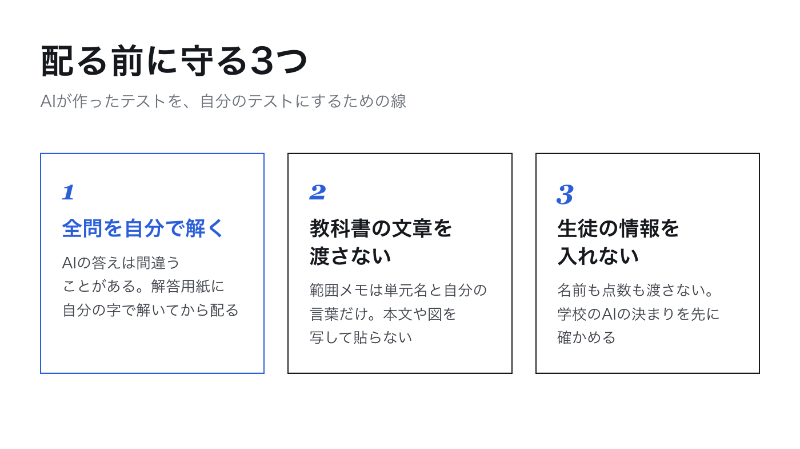

1
全問を自分で解く
はると先生
模範解答までCodexが作ってくれるなら、それを信じて配ってもいいんじゃないですか。
とざき先生
ここだけは譲りません。AIの答えは間違うことがあります。計算そのものより、問題文の条件と答えが食い違っている、配点の合計が100点にならない、という形で出ます。配る前に、解答用紙に自分の字で全問解きます。50分のテストなら、先生が解くのに20分です。
とざき先生
自分で解く前に、Codexにも検算させておくと、間違いの多くはそこで消えます。頼み方はこれです。
Codexへの頼み方 ── そのまま貼って使えます
模範解答の全問を、最初に解いたのとは別の方法でもう一度解いて、答えが一致するか確かめてください。一致しない問題があれば、問題文と模範解答のどちらを直すべきかを日本語で説明してから直してください。配点の合計が100点になっているかも確かめてください。
すると何が起きるかCodexが全問を解き直し、一致したかどうかを報告してきます。私が見本のテストで頼んだときに届いた報告がこれです。
Codexからの報告 ── 実際に届いた文面（見本のテスト）
全20問を別解で再検算し、答えはすべて一致しました。
大問5は「実際の水量が89 L」と読める点だけ不正確でした。問題文には式の適用範囲を追加し、模範解答では89 Lを正味流入量から得た量として表現し直しました。
配点は各大問20点、合計100点（60点＋40点）です。
はると先生
答えは全部合っていたのに、直したところがあるんですね。
とざき先生
大問5は、容量84Lの水そうに13分後に「89L入っている」と模範解答に書いてありました。計算としては合っていますが、水そうには84Lしか入りません。あふれる量を出す途中の数として書き直してくれました。私も自分で解いたときに気づいていなかったところです。答えの数字だけでなく、こういう言い回しも検算で拾えます。
検算させたあとでも、自分で解く手順は省きません。AIに検算させるのは、自分が解くときに見つける間違いを減らすためで、自分が解く代わりではありません。
2
教科書の文章を渡さない
はると先生
第1回で、教科書の本文を貼って作らせないと言っていましたよね。国語だと、本文がないと問題が作れない気がするんですが。
とざき先生
教科書の本文や図は、出版社と作者のものです。授業で使うのと、AIに写して渡すのは別の話なので、私はAIに教科書の文章を渡していません。範囲メモに書くのは、単元名と、自分の言葉で書いた学習内容だけです。
とざき先生
国語なら「説明文の要旨をとらえる問題」「接続語の働きを問う問題」のように、身につけさせたい力を書きます。すると、Codexは自分で短い文章を書いて、それをもとに問題を作ります。教科書の本文で出したい問題は、先生が自分で作って足せばいいんです。テストの全部をAIで作る必要はありません。
- 渡してよいもの
- 単元名。自分の言葉で書いた学習内容と生徒の様子。自分で作った過去のテストや問題（自作のもの）。
- 渡さないもの
- 教科書の本文・図・問題。市販の問題集やテストの問題。出版社のPDFやスキャン。
はると先生
できあがったテストは、学校で配っても大丈夫なんですよね。
とざき先生
範囲メモが自分の言葉だけなら、できあがったテストは自作のテストです。授業で配るぶんには、私はそう考えて使っています。学校の外で公開したり配ったりするときは、別の判断が要るので、そのときは管理職に相談します。
3
生徒の情報を入れない
とざき先生
3つ目は、生徒の名前・点数・答案を、Codexに渡さないことです。第2回でフォルダを空にして始めたのは、このためです。フォルダに名簿のファイルを入れなければ、Codexが読むこともありません。
はると先生
範囲メモに「◯◯さんが苦手」と書くのもだめですか。
とざき先生
名前は書きません。「2点から式を求めるところでつまずく子が多い」のように、クラスの様子として書けば足ります。それで問題の作り方は十分に変わります。
- フォルダに入れるのは範囲メモだけ。名簿・答案・成績のファイルは入れない
- 範囲メモに生徒の名前を書かない。様子はクラス全体のこととして書く
- 学校や教育委員会のAIの決まりを、先に確かめておく
テストは学年で同じものを使う学校が多いと思います。教科会に出すときは「AIで下書きを作り、自分で全問解いて確かめた」と伝えるようにしています。作り方を隠さないほうが、同じ教科の先生に安心して使ってもらえます。
4
5回のまとめ
とざき先生
先生が自分の手でやるのは「範囲を決める」と「全問を解いて確かめる」の2つ。あいだの「作る・整える・直す」はCodexに日本語で頼む。渡すのは自分の言葉だけで、教科書の文章と生徒の情報は渡さない。これで全部です。
はると先生
次の中間テストで、まず範囲メモから書いてみます。
やってみよう
第3回で作らせた見本の模範解答を1問、自分で解いてみてください。答えが合っていれば、それが「解いて確かめる」の手順そのものです。次は自分の範囲メモで、同じことを1本通してみましょう。